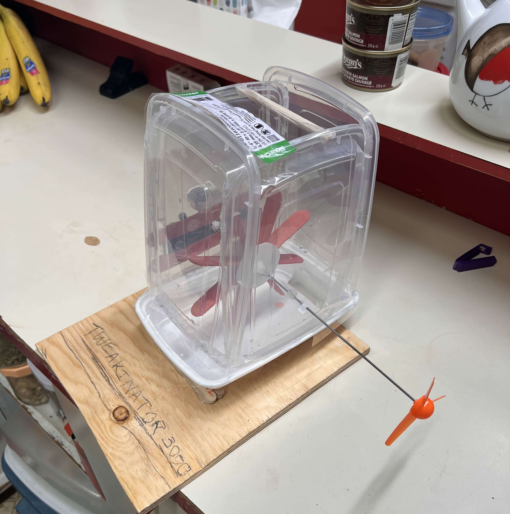

In a group of 4, I helped create a Hydroelectric dam. Our design placed 1st in the Burnaby SFU campus and won a trip to Edmonton for the Western Engineering Competition. Our Hydroelectric generator was best in class in design quality, as it had 0 leaks and lost no water due to poor craftsmanship. In addition, the generator was 2nd in power generation.

The Hydroelectric Generator
The competition was a major test of our planning and time managment skills. As it lasted an afternoon, time was short, and we had to manage our time effectively. In addition, we were required to be inventive with the limited resource selection we were given. Prototyping was another valuable lesson, as we could have been more efficient with how we prototyped and tested our ideas.
Pills here! Grabbing a shot! Kill all sons a bitches. Thats my 'fficial instructions. I could go for a BBQ bacon burger.